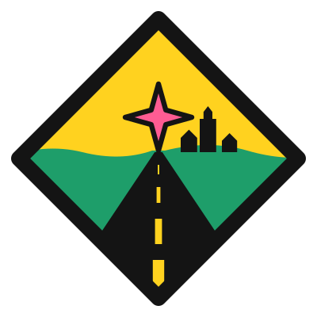

2026 – ahora · creador
LA FUGASTOP
Sal en autostop. Vuelve con una historia.
Una aventura en autostop de dos en dos: sales desde Bilbao, Madrid, Zaragoza, Barcelona o Valencia y llegas a un pueblo que no conoces hasta el último momento, donde te espera una fiesta con sus vecinos. Sin clasificación ni cronómetro. La idea es unir la ciudad y el pueblo.
- Julio de 2027
- 500 plazas
- 5 salidas
- 1 pueblo secreto